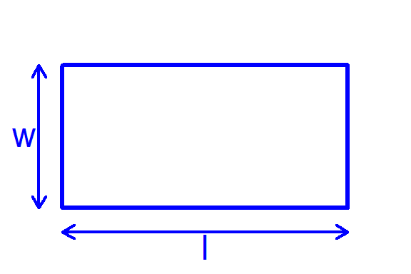

# Rectangle dimensions
l <- 6
w <- 3
# Set background and remove margins
par(mar = c(0, 0, 0, 0), bg = "white")
# Set plot limits slightly larger than rectangle for spacing
plot(0, 0, type = "n", xlim = c(-1, l + 1), ylim = c(-1, w + 1),
axes = FALSE, xlab = "", ylab = "", asp = 1)
# Draw rectangle
rect(0, 0, l, w, border = "blue", lwd = 3)
# Add double-headed arrow for length (bottom side)
arrows(0, -0.5, l, -0.5, code = 3, length = 0.1, col = "blue", lwd = 2)
text(l / 2, -0.8, "l", col = "blue", cex = 1.5)
# Add double-headed arrow for width (left side)
arrows(-0.5, 0, -0.5, w, code = 3, length = 0.1, col = "blue", lwd = 2)
text(-0.8, w / 2, "w", col = "blue", cex = 1.5)